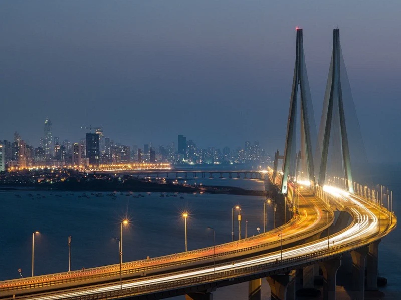
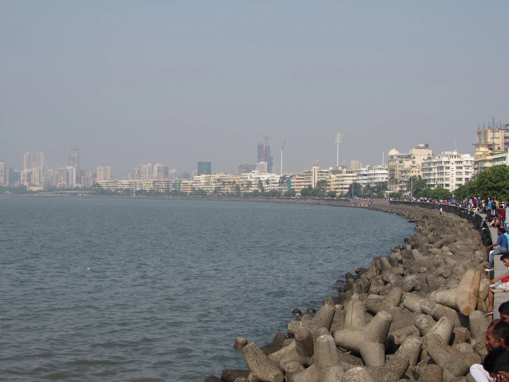
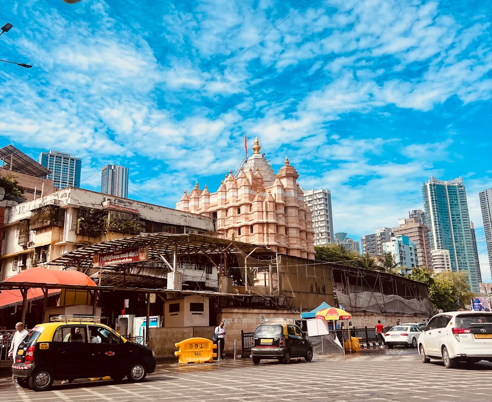
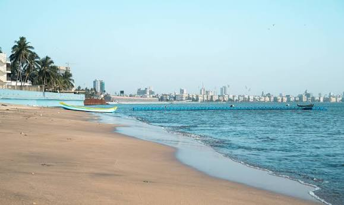
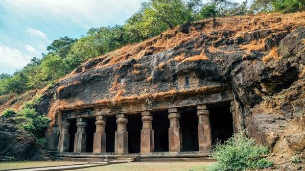

Bandraboli
- The Cultural Blend: It is a vibrant colloquial mix of Hindi, English, Marathi, and Konkani. It is noticeably different from standard "Bambaiya" or Tapori Hindi spoken in the rest of Mumbai.
- Grammar Tweaks: Speakers routinely assign incorrect grammatical genders to words (for example, saying "meri naam" instead of the standard Hindi "mera naam").
- Modified Question Words: Standard Hindi question words are often structuralized differently; for instance, the word kyon (why) changes to kaiyku.

Chatrapati Shibaji Terminus
- Location: Mumbai, Maharashtra, India.
- Headquarters: Serves as the headquarters of the Central Railway zone.
- Architecture:signed by British architect Frederick William Stevens, blending Victorian Gothic Revival with traditional Indian architecture.
- History: Built between 1878 and 1888; renamed to honor the 17th-century Maratha king Chhatrapati Shivaji Maharaj.
- Significance: One of the busiest and most famous railway stations in India.

Marine Drive
- The Queen's Necklace: Streetlights curve along the boulevard. At night, they glow like a string of pearls, earning the road its famous nickname.
- Art Deco Architecture: The scenic promenade is lined with historic Art Deco buildings built in the 1930s and 1940s.
- A Vibrant Hub: People gather here daily to watch sunsets, walk along the sea wall, and enjoy cool breezes.
- Local Snacks: Visitors often stop at the northern end near Girgaon Chowpatty to eat street food like bhel puri and vada pav.

Sidhibinayak
- Establishment: Built on November 19, 1801, by Laxman Vithu and Deubai Patil.
- The Deity: Features a 2.5-foot-tall black stone idol of Ganesha with the trunk tilted to the right, holding a lotus, an axe, holy beads, and a bowl of modaks.
- significance: "Siddhivinayak" means the Ganesha who grants wishes, making it one of the richest and most visited temples in Mumbai.

Juhu Beach
- Life at Juhu is vibrant, joyous,and full of romance
- Whenver happen to visit with loved ones, it is a treat to observe
- Livesin bloom, gusto, action, songs of life vibrate.A sight of happiness, prosperity and urge to live
- Find every one lost in their own dreams world
- Be children, young couples, and old pairs holding hands
- Lost in themselves away from daily worries, struggles andtensions
- Playing with sea waves touching their feet; children running towards

Elephant Cave
- Scenery:It is counted as a national park.
- Relevance:It is huge park with full of grrenery and other of this things.